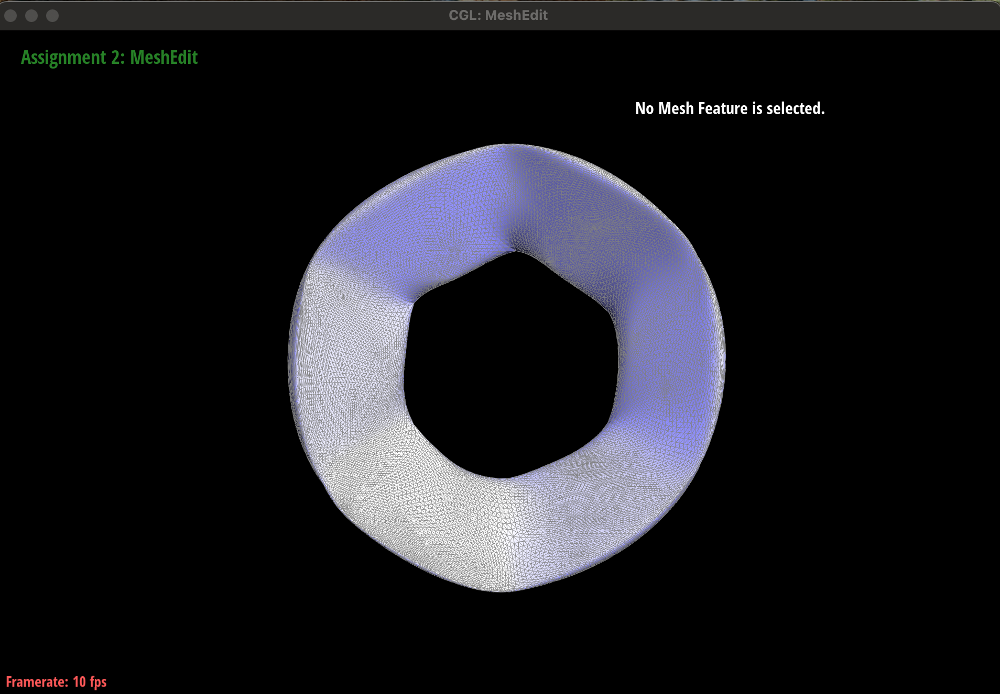
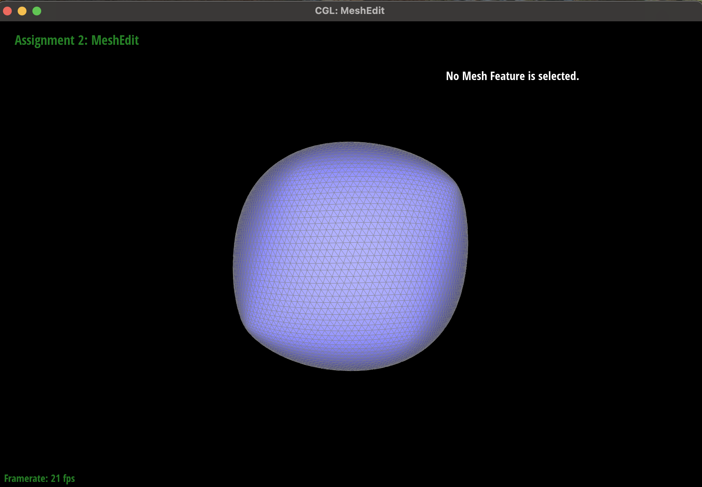

CS184/284A Spring 2025 Homework 2 Write-Up
Work by Sultan Jamalbekov
Link to webpage: (TODO) cs184.eecs.berkeley.edu/sp25
Link to GitHub repository: (TODO) cs184.eecs.berkeley.edu/sp25

Overview
The essence of homework 2 was to work with curves and surfaces. I implemented code that generates Bezier curves and surfaces. Also studied the half-edge data structure that allows for meaningful traversal of meshes.Section I: Bezier Curves and Surfaces
Part 1: Bezier curves with 1D de Casteljau subdivision
-
Briefly explain de Casteljau’s algorithm and how you implemented it in order to evaluate Bezier curves.
- We take two points in the given array, perform interpolation between them at a given parameter t and repeat for the next adjacent pair. We keep repeating until one point is left. That one point is the point that passes the Bezier curve at the parameter t.
-
Take a look at the provided .bzc files and create your own Bezier curve with 6 control points of your choosing. Use this Bezier curve for your screenshots below.
Some fancy shape with 6 control points - Show screenshots of each step / level of the evaluation from the original control points down to the final evaluated point. Press E to step through. Toggle C to show the completed Bezier curve as well.
-
Show a screenshot of a slightly different Bezier curve by moving the original control points around and modifying the parameter t via mouse scrolling.
Part 2: Bezier surfaces with separable 1D de Casteljau
-
Briefly explain how de Casteljau algorithm extends to Bezier surfaces and how you implemented it in order to evaluate Bezier surfaces.
- Basically, you have a nxn grid of control points. Each row with n points defines a Bezier curve parametrized by u.
- We then consider derived point for each row to define a Bezier curve parametrized by v (points roughly in a column).
-
Show a screenshot of bez/teapot.bez (not .dae) evaluated by your implementation.
Section II: Triangle Meshes and Half-Edge Data Structure
Part 3: Area-weighted vertex normals
-
Briefly explain how you implemented the area-weighted vertex normals.
- Start a do-while traversal of the mesh, similar to how it is done in printNeighborPositions in the primer. Initialize a HalfedgeCIter with the given vertex's halfedge. Each iteration: find vertices of the incident face, calculate edge vectors, calculate cross product, calculate area using the cross product, add the cross product normal scaled by the area to the cumulative weighted sum vector, update the HalfedgeCIter variable to the next halfedge of the twin of the given edge. Continue until the HalfedgeCIter is equal to the hafledge of the given vertex again. After all iterations, normalize the weighted sum vector and return.
-
Show screenshots of dae/teapot.dae (not .bez) comparing teapot shading with and without vertex normals. Use Q to toggle default flat shading and Phong shading.
Part 4: Edge flip
-
Briefly explain how you implemented the edge flip operation and describe any interesting implementation / debugging tricks you have used.
- I have spent an hour trying to solve it all in my head but always was overwhelmed by the amount of operations that must be performed.
- I then spent between 1 and 2 hours drawing a diagram of a two-triangle mesh before and after the flip, listing all elements, and listing all the transformations. I listed the old values of halfedge, vertex, face, etc and the new one. I then declared all the halfedges, vertices, edges, faces in code with same names as in my diagram on paper. Performed all assignments same way with same names as on paper. Added a check that the edge is not on bound. Everything worked from the first try (at least it seems that way).
-
Show screenshots of the teapot before and after some edge flips.
Part 5: Edge split
-
Briefly explain how you implemented the edge split operation and describe any interesting implementation / debugging tricks you have used.
- I followed the same approach as in part 4: drew the mesh before split, after split, labeled every element. Then I transferred every element into Notion in text and wrote down the parameters (halfedge, position, next, twin, etc.) for every element, regardless of whether anything changes for it.
- In code, I first retrieved the elements from the “before” state. Then I created the new elements. Then I wrote the pointer reassignments.
- Many previous attempts did not work. Once I spent my time writing down every reassignment in Notion and did not disregard any element even if it does not change, everything worked.
-
Show screenshots of a mesh before and after some edge splits.

-
Show screenshots of a mesh before and after a combination of both edge splits and edge flips.
-
Write about your eventful debugging journey, if you have experienced one.
- I could not make it work even after writing down everything on paper. I rewrote everything multiple times. It all worked once I decided to include even halfedges for which the “face” and “next” is unknown. I wrote every element both before and after. And made a pointer assignment for every element even if it is not supposed to change. That was when it worked.
-
Part 6: Loop subdivision for mesh upsampling
-
Briefly explain how you implemented the loop subdivision and describe any interesting implementation / debugging tricks you have used.
- I have followed the guidelines from the homework spec and comments in the started code. First, I compute new positions for the old vertices. Then I compute new positions for edge midpoints. Then I split all original edges. Then I flip new edges that connect old and new vertices. Then I update old vertex positions.
- My first several attempts did not work. I have implemented several changes. Instead of using a while loop (as recommended in HW primer), I used a for loop that traversed an array that collects all the relevant elements. I also noticed that I used incorrect formula for updating positions of the old vertices. Last update that made everything work was changing the position of the edge midpoints during step 3: while the original edges are split.
-
Take some notes, as well as some screenshots, of your observations on how meshes behave after loop subdivision. What happens to sharp corners and edges? Can you reduce this effect by pre-splitting some edges?
- Sharp edges and corners are smoothed out. Angularity of the shape is not preserved well. Even a single application of loop subdivision turns cube into a shape that is not easily recognized as a former cube. It seems like an aliasing problem: after subdivision, the resulting shape looks like it could originate from many different objects.
- I have tried to see the effect of splitting edges of a figure. Could it help solving the problem mentioned above? What would it translate into after subdivision? Overall, I found that for shapes meshes with a large number of faces/edges(beast, teapot, weird, maxplank, beatle), loop subdivision does not really change the quality of the model: I could still recognize the original shape quite well.
- For smaller shapes in the given code like the cube or torus, loop subdivision indeed made the shape less recognizable until it converges to a smooth version with many faces.
- Pre-splitting edges did not really help make the cube more distinct after subdivision. It simply resulted into folds in the final converged model.
- However, pre-splitting many faces through the entire front of the torus without changing position of any original vertex resulted in a converged shape that preserve some of its original folds. Thus, upsampling the original figure uniformly without changing the geometry of the shape can help avoid loss of angularity during loop subdivision.
 -
Load dae/cube.dae. Perform several iterations of loop subdivision on the cube. Notice that the cube becomes slightly asymmetric after repeated subdivisions. Can you pre-process the cube with edge flips and splits so that the cube subdivides symmetrically? Document these effects and explain why they occur. Also explain how your pre-processing helps alleviate the effects.
- The cube's square faces are split into triangles (e.g., splitting a face into triangles (A, B, C) and (C, B, D)). The choice of diagonal (e.g., AC or BD) affects the topology and vertex positions after subdivision. Different triangulation patterns across faces lead to inconsistent smoothing.
- Corner vertices of the cube have degree 3, while edge midpoints introduced during subdivision have higher degrees. The Loop subdivision formula weights neighbors differently based on degree, causing uneven smoothing at corners and edges.
- Repeated subdivisions amplify small topological differences, as new vertex positions depend on local neighbor configurations, leading to slight distortions that make the cube appear asymmetric (e.g., a sphere-like shape with uneven curvature).
- Flipping the diagonals across the different sides of the cube to make them face same direction (if rotating the cube around vertical axis) did not make much difference. I assumed that it would make the pattern of triangles generated during subdivision more uniform and symmetric, resulting in a more symmetric shape in convergence.
- But a truly great result was achieved once I split diagonals across all sides of the cube, so that each side has four triangles arranged in identical way. Applying splitting this way basically made subdivision identical for each face, making the converging shape symmetrical.
